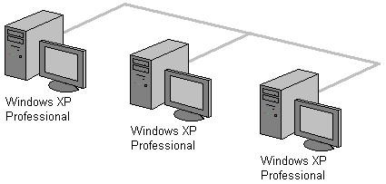
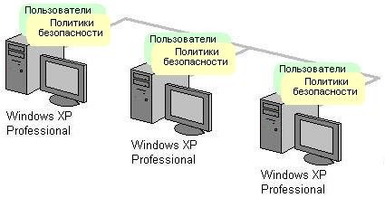
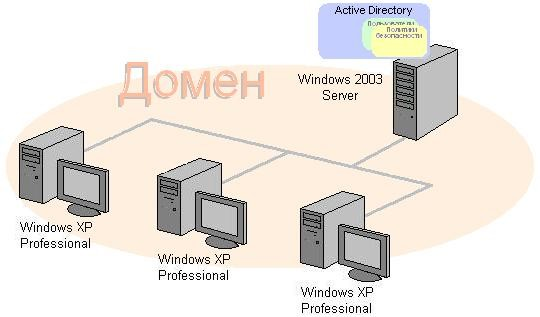

Каждый компьютер в сети может иметь один из двух статусов:
Серверы предоставляют свои ресурсы (диски, папки с файлами, принтеры, устройство для чтения CD/DVD и т.п.) другим компьютерам сети. Как правило, это специально выделенный высокопроизводительный компьютер, оснащенный специальной серверной операционной системой (Windows Server 2003), центрально управляющий сетью.
Рабочая станция (клиентский компьютер) - это компьютер рядового пользователя на базе Windows XP Professional, получающий доступ к ресурсам серверов.
По типу организации работы компьютеров в сети различают:
Выбор типа локальной сети в большей степени зависит от требований к безопасности работы с информацией и уровня подготовки администратора сети.
В одноранговой сети все компьютеры имеют одинаковый приоритет и независимое администрирование
Каждый компьютер имеет установленную операционную систему платформы Microsoft Windows любой версии или совместимую с ней. Эта операционная система поддерживает работу клиента сети Microsoft.
Пользователь каждого компьютера самостоятельно решает вопрос о предоставлении доступа к своим ресурсам другим пользователям сети. Это наиболее простой вариант сети, не требующий особых профессиональных знаний. Установка такой сети не занимает много времени.
Для построения одноранговой локальной сети достаточно объединить компьютеры при помощи сетевого кабеля (смонтировать кабельную систему) и установить на компьютеры, например, ОС Windows XP Professional. Мастер подключения к сети, поможет осуществить все необходимые настройки операционной системы.
В сети с выделенным сервером управление ресурсами сервера и рабочих станций централизовано и осуществляется с сервера. Отпадает необходимость обходить все компьютеры сети и настраивать доступ к разделяемым ресурсам. Включение новых компьютеров и пользователей в сеть также упрощается. Повышается безопасность использования информации в сети. Это удобно для сетей, в которых работают различные категории пользователей и много разделяемых ресурсов.
Для создания сети с выделенным сервером:
Изменения в учетных записях пользователей делаются администратором сети централизованно, на сервере. К тому же пользователей можно объединять в группы и создавать отдельную политику работы в сети для каждой группы. Это значительно облегчает работу администратора при назначении доступа к общим ресурсам.
Выделенный сервер часто выполняет только одну определенную функцию (роль), например:
В небольших локальных сетях, как правило, устанавливают один сервер, объединяющий в себе несколько серверных функций (ролей). Этого вполне достаточно и экономически оправдано. Кстати, небольшие сети могут обходиться и без серверов, т.е. быть одноранговыми.
Сложности такой сети заключаются в следующем:
В таблице представлены достоинства и недостатки двух видов сетей.
| Достоинства | Недостатки |
|---|---|
| Одноранговая сеть | |
| - Легко настроить - Не требует серверного ПО - Не нужен квалифицированный системный администратор - Меньшая стоимость проекта. |
- Легко настроить - Не требует серверного ПО - Не нужен квалифицированный системный администратор - Меньшая стоимость проекта. - Меньшая безопасность - Сложность администрирования каждого компьютера в отдельности - Ухудшение производительности при совместном использовании pесурсов. |
| Сеть с выделенным сервером | |
| - Большая безопасность - Легче управлять, т.к. администрирование централизовано |
- Большая безопасность - Легче управлять, т.к. администрирование централизовано - Сложность настройки, администрирования системы, клиентов, разделяемых ресурсов - Отсутствие доступа к сети при выходе из строя cервера. |
Рабочая группа - это средство поддержки сетевого окружения, входящее в состав Microsoft Windows XP.
Рабочая группа (workgroup) - это логическая группа сетевых компьютеров одноранговой сети.
Компьютеры рабочей группы совместно используют общие ресурсы, такие как файлы и принтеры. При администрировании каждого компьютера определяют:
При этом, на каждом компьютере рабочей группы создаются собственные базы данных пользователей и политики безопасности локального компьютера.
Рабочая группа является удобной сетевой средой для небольшого числа компьютеров, расположенных недалеко друг от друга.
В сетях с выделенными серверами администрирование осуществляется централизованно. Для упрощения администрирования, любые компьютеры сети и разделяемые ресурсы можно объединять в группы, называемые доменами.
Домен - это логическая группировка любых компьютеров сети под одним именем.
Для домена создается общая база данных. В Windows Server 2003 эта база данных называется каталогом и входит в службу каталога Active Directory.
К объектам, хранимым в каталоге, относятся как пользователи, так и ресурсы сети.
Домен может объединять любые компьютеры, расположенные в локальной сети или находящиеся в разных городах, странах. Соединение компьютеров домена может быть любым, включая телефонные линии, оптоволоконные линии, спутниковую связь и другие.
Служба каталога Active Directory разворачивается на любом сервере, входящем в состав сети. Такой сервер получает дополнительно статус контроллера домена. Администрирование сети и управление политиками безопасности осуществляется на контроллере домена.
Доменов в сети может быть несколько, и каждый домен обязательно имеет один или несколько контроллеров домена.
Если контроллеров домена несколько, то база данных Active Directory копируется на каждый. Это повышает отказоустойчивость и делает администрирование более удобным, т.к. все изменения, проведенные на одном контроллере домена, отображаются на других. Этот процесс называется репликацией.
Правила взаимодействия в сети, называемые сетевым протоколом TCP/IP определяют, что каждый компьютер в сети должен иметь адрес, так называемый IP-адрес. Вид адреса - 4 числа, записанные через точку. Например, 130.51.45.2 или 192.168.0.1.
IP-адрес компьютера-отправителя и IP-адрес компьютера-получателя указывается в пакете информации, который передается по сети.
Компьютеры находят друг друга по IP-адресам. Если же пользователю необходимо найти компьютер в сети, он должен будет указать его IP-адрес, подобно как мы набираем номер телефона, чтобы позвонить знакомым. Знать IP-адреса всех нужных компьютеров для человека достаточно сложно. Для облегчения доступа пользователей к компьютерам сети (в том числе сети Интернет) стали использовать имена. Для поиска сервера в Интернете проще указать его имя, например, microsoft.com, чем IP-адрес, который может выглядеть как 207.46.230.219.
Для совместимости числового IP-адреса и буквенного имени Windows XP и Windows Server 2003 имеют специальную программу (службу) DNS.